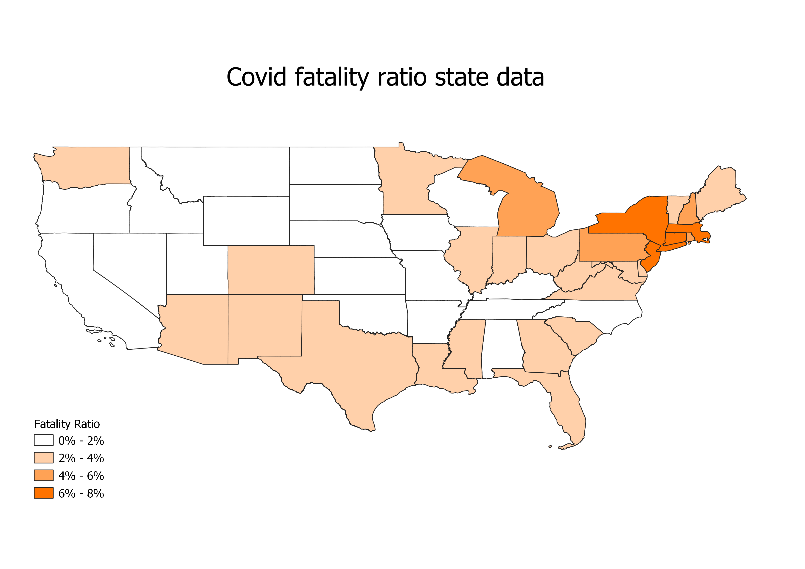

Homework 9: age and covid fatality by state
Caleb Willis
This map displays the distribution of individuals above the age of 65 across the United States. The darker colored states are the states with the greatest proportion of elder invividuals in the population. These proportions are in percentages of the total population of the state. The Pie charts compare the individuals of the population who are 18 years old or younger (green) to the elder population (yellow).

This map was created with the pretty breaks mode. This is a map of the fatality ratio, that is the ratio between covid cases and deaths from the virus. The darker colored staates have higher fatality ratios.

I chose these maps because I was interested in seeing how the fatality ratio compared to the population of older indivuals in a state, given their vulnerability to the disease. Its is interesting to see that these two values are not always correlated. Some states that had a relatively high population of older people had a lower fatality ratio than states that had a lower population of older people such as the case with Montana and New York.
Data used for this project
Data collected from KFF.org